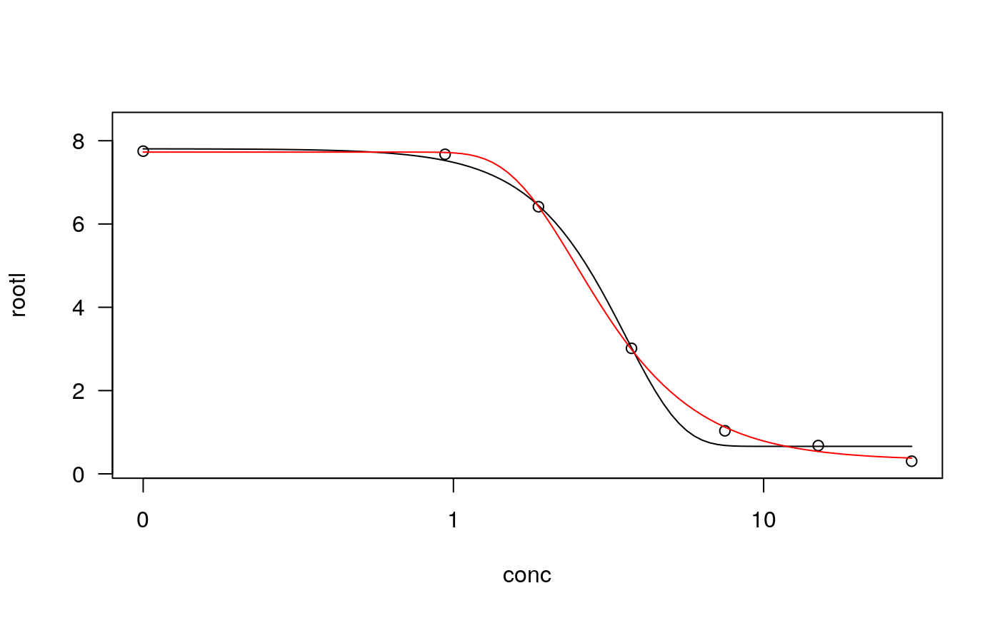

weibull1.Rd'weibull' and 'weibull2' provide a very general way of specifying Weibull dose response functions, under various constraints on the parameters.
weibull1(fixed = c(NA, NA, NA, NA), names = c("b", "c", "d", "e"), method = c("1", "2", "3", "4"), ssfct = NULL, fctName, fctText) weibull2(fixed = c(NA, NA, NA, NA), names = c("b", "c", "d", "e"), method = c("1", "2", "3", "4"), ssfct = NULL, fctName, fctText) weibull2x(fixed = rep(NA, 5), names = c("b", "c", "d", "e", "t0"), method = c("1", "2", "3", "4"), ssfct = NULL, fctName, fctText)
| fixed | numeric vector. Specifies which parameters are fixed and at what value they are fixed. NAs for parameter that are not fixed. |
|---|---|
| names | a vector of character strings giving the names of the parameters (should not contain ":"). The default is reasonable (see under 'Usage'). The order of the parameters is: b, c, d, e (see under 'Details'). |
| method | character string indicating the self starter function to use. |
| ssfct | a self starter function to be used. |
| fctName | optional character string used internally by convenience functions. |
| fctText | optional character string used internally by convenience functions. |
As pointed out in Seber and Wild (1989), there exist two different parameterisations of the Weibull model. They do not yield the same fitted curve for a given dataset (see under Examples).
The four-parameter Weibull type 1 model ('weibull1') is $$ f(x) = c + (d-c) \exp(-\exp(b(\log(x)-\log(e)))).$$
Thw four-parameter Weibull type 2 model ('weibull2') is $$ f(x) = c + (d-c) (1 - \exp(-\exp(b(\log(x)-\log(e))))).$$
Both four-parameter model functions are asymmetric with inflection point at the dose equal \(e\).
The value returned is a list containing the non-linear function, the self starter function and the parameter names.
Seber, G. A. F. and Wild, C. J (1989) Nonlinear Regression, New York: Wiley \& Sons (pp. 338--339).
The functions are for use with the function drm.
For convenience several special cases of the function 'weibull1' are available:
W1.2, W1.3 and W1.4.
Special cases of 'weibull2' are:
W2.2, W2.3 and W2.4.
These convenience functions should be used rather than the underlying functions
weibull1 and weibull2.
## Fitting two different Weibull models ryegrass.m1 <- drm(ryegrass, fct = W1.4()) plot(ryegrass.m1, conLevel=0.5)#> Warning: "conLevel" is not a graphical parameter#> Warning: "conLevel" is not a graphical parameter#> Warning: "conLevel" is not a graphical parameter#> Warning: "conLevel" is not a graphical parameter#> Warning: "conLevel" is not a graphical parameterryegrass.m2 <- drm(ryegrass, fct = W2.4()) plot(ryegrass.m2, conLevel=0.5, add = TRUE, type = "none", col = 2)#> Warning: "conLevel" is not a graphical parameter# you could also look at the ED values to see the difference ## A four-parameter Weibull model with b fixed at 1 ryegrass.m3 <- drm(ryegrass, fct = W1.4(fixed = c(1, NA, NA, NA))) summary(ryegrass.m3)#> #> Model fitted: Weibull (type 1) (3 parms) #> #> Parameter estimates: #> #> Estimate Std. Error t-value p-value #> c:(Intercept) 0.12945 0.36866 0.3511 0.729 #> d:(Intercept) 8.23936 0.30335 27.1613 < 2.2e-16 *** #> e:(Intercept) 4.53797 0.63886 7.1032 5.243e-07 *** #> --- #> Signif. codes: 0 ‘***’ 0.001 ‘**’ 0.01 ‘*’ 0.05 ‘.’ 0.1 ‘ ’ 1 #> #> Residual standard error: #> #> 0.8384585 (21 degrees of freedom)## A four-parameter Weibull model with the constraint b>3 ryegrass.m4 <- drm(ryegrass, fct = W1.4(), lowerl = c(3, -Inf, -Inf, -Inf), control = drmc(constr=TRUE)) summary(ryegrass.m4)#> #> Model fitted: Weibull (type 1) (4 parms) #> #> Parameter estimates: #> #> Estimate Std. Error t-value p-value #> b:(Intercept) 3.00000 0.82015 3.6579 0.001563 ** #> c:(Intercept) 0.68190 0.18943 3.5999 0.001789 ** #> d:(Intercept) 7.68189 0.23088 33.2719 < 2.2e-16 *** #> e:(Intercept) 3.58441 0.16992 21.0951 3.946e-15 *** #> --- #> Signif. codes: 0 ‘***’ 0.001 ‘**’ 0.01 ‘*’ 0.05 ‘.’ 0.1 ‘ ’ 1 #> #> Residual standard error: #> #> 0.5657677 (20 degrees of freedom)